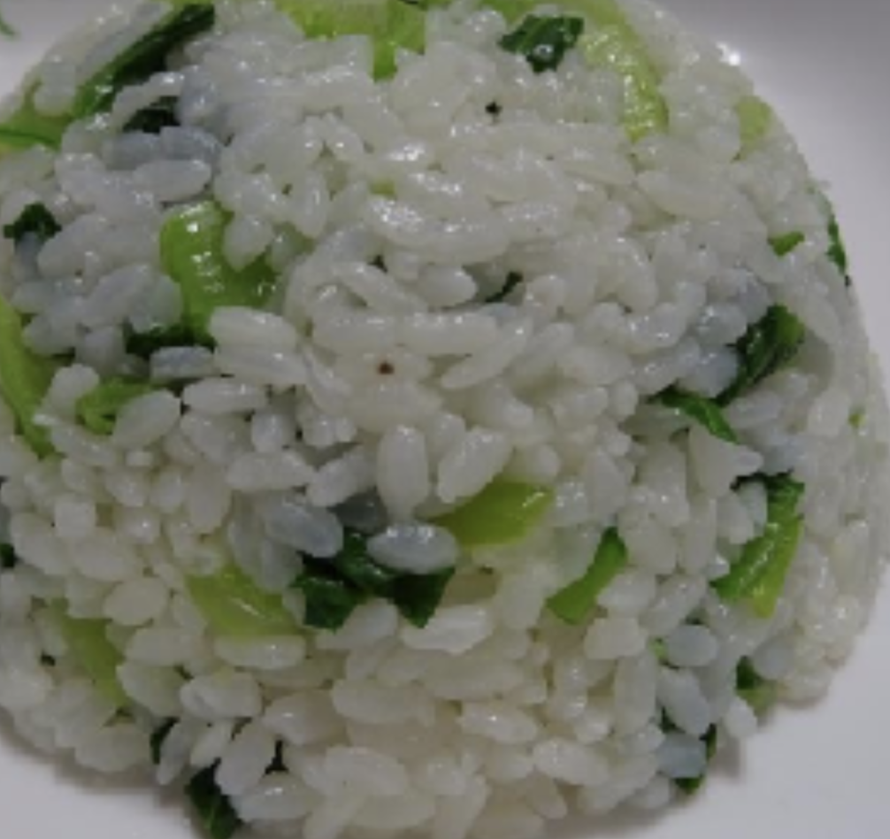

#13 - SHANGHAINESE VEGETABLE RICE - 菜飯
Vegetable rice is commonly served with a Shanghainese meal. Typically, medium (shorter and fatter) grain rice is used. The cooked medium grain rice is more moist and tender than the long grain rice.

INGREDIENTS:
- 1 ½ cup (2 rice cup) medium grain rice 珍珠米
- 200g Shanghai vegetable (小棠菜)
- 1 clove garlic
- 2 cup chicken broth / water
- 2 TBSP vegetable oil
- Salted pork (optional) about 2 x 2 inches size
Directions:
- Wash, dry and cut vegetable into small pieces, separating the stalk and the green leaves.
- Crush the garlic with the flat part of the knife. Remove the skin.
- Heat a frying pan with 2 TBSP oil. When the oil is hot, put in the garlic, fry until slightly brown.
- Remove the garlic from oil and add in the vegetable stalk.
- Fry the vegetable stalk for a minute, then add in the leave.
- Cook until the leaves are wilted. Remove and set aside.
- Wash the rice, drain and put it in rice cooker. Add the water/chicken broth.
- Let the rice cook until it is bubbly and the water is almost absorbed.
- Put the vegetable in and let it cook until the rice is done.
- Keep warm until serving.
(Serves 1 person)
Note:
- Vegetable rice with salted pork:
- Cut salted pork into small pieces.
- Stir-fry salted pork, and then add it to the washed rice before turn on the rice cooker.
- Water-Rice ratio in this recipe is less than the usual rice cooking instruction because the vegetable will give out water.